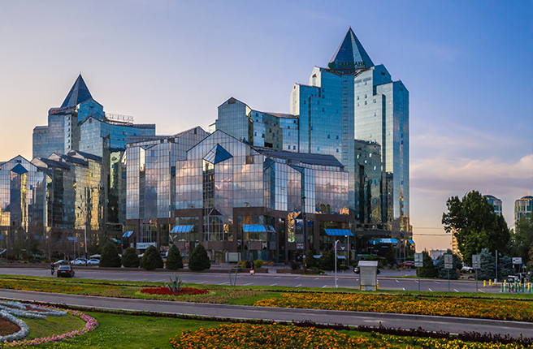
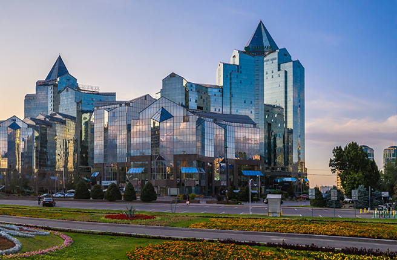
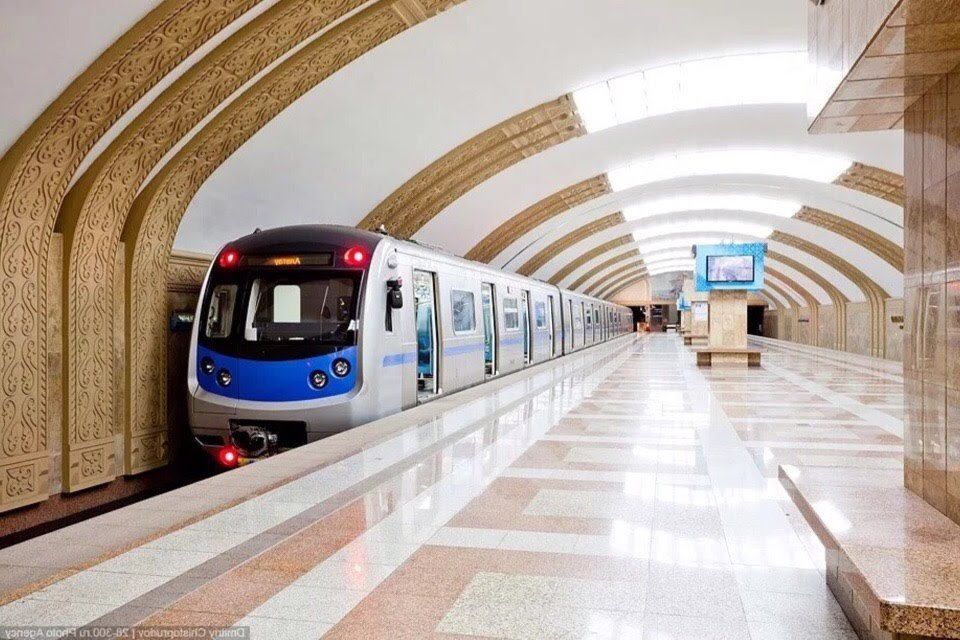

Алматы менің сүйікті қалам
Алматы (1921 жылға дейін — Верный; орта ғасырларда — Алмату (Алмалы)) — Қазақстанның ең үлкен қаласы. Ол Тянь-Шань тауларының солтүстігінде, Іле Алатауының баурайында, Қазақстан Республикасының оңтүстік-шығысында орналасқан. Алматыда 1 897 143 адам тұрады (2019).

 


Places for tourists
«Медеу» елдің басты мұз айдыны 10 500 шаршы метр мұз теңіз деңгейінен 1691 метр биіктікте орналасқан. Ашық стадиондардың ішіндегі ең биік таулы спорт кешенілы спорт кешені. Конькимен жүгіру спортында әлемдік рекордтар саны бойынша көшбасшы. Қазақстандағы ең көп баратын спорт кешені. Қала құрылысы және сәулет ескерткіші.
Көктөбе – Іле Алатауының бөктеріндегі көрікті жерде орналасқан төбе. Алматы қаласының оңтүстік-шығысында. Абсолют биіктігі 1070 м, салыстырмалы биіктігі 370 м-дей. Көктөбеде биіктігі 372 м болатын телевизиялық мұнара, қала тұрғындарының демалыс аймақтары, т.б. орналасқан. Алматы қаласына панорамалық шолу жасайтын орын саналады.

Шымбұлақ — Алматы маңындағы Іле Алатауы шатқалының 2510 метр биіктігінде орын тепкен тау-шаңғылық курорты. Талғар асуының бөктеріндегі бұл спорттық кешен 1954 жылдан бастап тау шаңғысы спортшыларының сүйікті орнына айналған. Алғашқыда бұл кешен кеңес тау шаңғышыларының олимпиадаға дайындық базасы ретінде құрылған.
Алматы метрополитені — Алматы қаласында салынып жатқан метрополитен жүйесі. Алғашқы бөлігі 2011 ж. 1 желтоқсанда ашылды. Заманауи технологияларды енгізу бойынша жоспарды жүзеге асыру үшін Алматы метрополитенін салу барысында «Herrenknecht AG» неміс компаниясының «Herrenknecht S-320» жоғары өндірісті тоннел қазушы кешені сатып алынған.
Top Universities

Әл-Фараби атындағы (ҚазҰУ)
1991 жылдың 23 қазанда С.М. Киров атындағы ҚазМУ-ға ұлы ғалым, ойшыл, энциклопедист ғалым, «Шығыстың екінші ұстазы - Әбу Насыр әл-Фарабидің есімі берілді.
Абай атындағы (ҚазҰПУ)
Тұңғыш жоғары оқу орны 1930 жылдан бастап Қазақ педагогикалық институты (ҚазПИ) деп аталып, оған 1935 жылы ұлы ойшыл, ақын Абайдың есімі берілді.

Сулеймен Демирел атындағы (СДУ)
Сулейман Демирель атындағы Университет 1996 жылы Түркия мемлекетінің 9-шы президенті Сулейман Демирельдің қатысуымен ашылды.

ХАТУ (IITU)
Халықаралық ақпараттық технологиялар университеті 2009 жылы Carnegie Mellon ақпараттық технологиялар университетінің ынтымақтастығымен салынған.
Population of Almaty
| Year | Population | Yearly % Change | Yearly Change | Migrants (net) | Median Age | Fertility Rate | Dencity (P/Km2) | Urban Pop % | Urban Population | Country's Share of World Pop | World Population | Kazakhstan Global Rank |
|---|---|---|---|---|---|---|---|---|---|---|---|---|
| 2020 | 18,776,707 | 1.21 % | 225,280 | -18,000 | 30.7 | 2.76 | 7 | 57.7 % | 10,828,881 | 0.24 % | 7,794,798,739 | 64 |
| 2019 | 18,551,427 | 1.27 % | 231,809 | -18,000 | 29.6 | 2.69 | 7 | 57.7 % | 10,698,322 | 0.24 % | 7,713,468,100 | 64 |
| 2018 | 18,319,618 | 1.33 % | 239,599 | -18,000 | 29.6 | 2.69 | 7 | 57.7 % | 10,568,980 | 0.24 % | 7,631,091,040 | 63 |
| 2017 | 18,080,019 | 1.40 % | 249,118 | -18,000 | 29.6 | 2.69 | 7 | 57.7 % | 10,437,728 | 0.24 % | 7,547,858,925 | 63 |